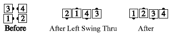
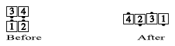

From wherever is appropriate for the "Anything" call: The "Anything" call must have as its final action a Step Thru or Extend. Do all of the "Anything" call, except for the final Step Thru or Extend. For example, in Square Chain Thru to a Wave, the dancers would do all of the call except for stepping forward on the final Turn Thru:

Square Thru 3 to a Wave:

Additional applications include Scoot Chain Thru To A Wave, Load the Boat Centers to a Wave, Percolate Outsides to a Wave, Flip Back to a Wave, or Tag Back to a Wave to a Wave.
When used with Tagging Calls Back to a Wave, some callers prefer to say "Centers to a Wave". For example: Flip Back Centers to a Wave, or Tag Back to a Wave Centers to a Wave.
Do not be confused by calls which contain "to a Wave" as part of their name (e.g. Dosado to a Wave, Single Circle to a Wave, Tag Back to a Wave, Cross Roll to a Wave).